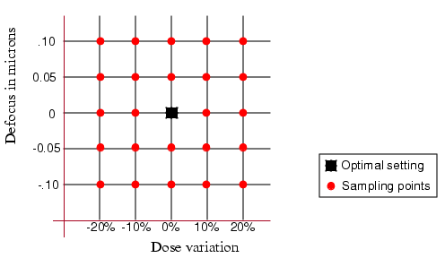
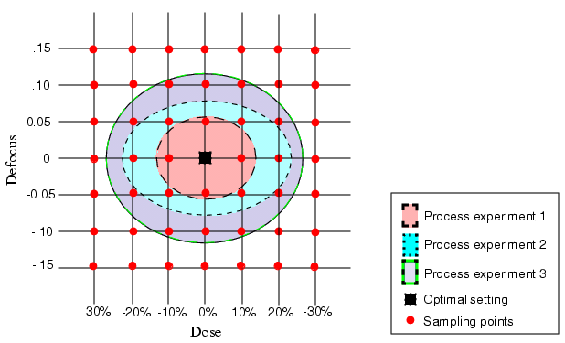

In generating
PV-band data, you define the process variations to explore by specifying
a set of dose, focus, mask bias, resist, and etch variation settings
relative to optimal values.
The LFD::PVband function evaluates printing only
at the specified grid points.
Figure 1. Sampling Grid Points, not Entire
Space
Procedure
- Identify the optimal process
variability settings (best focus, dose, mask bias, resist, and etch
settings).
- Identify the focus, dose and
other variations anticipated during the production run.
- Decide whether to design one
experiment or many:
For multiple experiments
(recommended), select two or more sets of focus and dose conditions
with one set to represent a small process space containing the optimal setting
and another set to represent a larger space that captures the anticipated
corner cases.
For a single experiment,
select a set of focus and dose conditions that capture the range
of process variability settings you anticipate during the majority
of the run. This is a subset of the variations from step 2.
Note: Multiple
experiments can be structured similarly to those shown in Figure 1 “Three Process Experiments Providing
Full Coverage” and in Figure 2 “Planning Multiple Experiments,” or
partition the parameter space differently to suit your needs.
- For each design experiment,
select a set of discrete dose and focus values to be evaluated.
Each of the sampling points within a shaded area represents a contour
to be created by the Calibre LFD tool.
Figure 2. Planning Multiple
Experiments
- Use this information for Creating Optical Models, creating resist models, and creating etch
models to use in generating PV-bands.